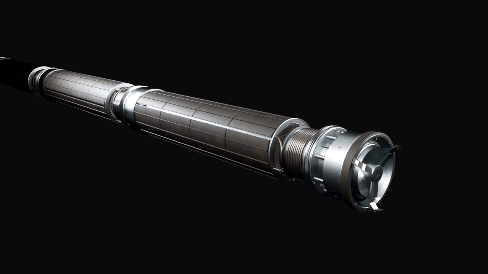
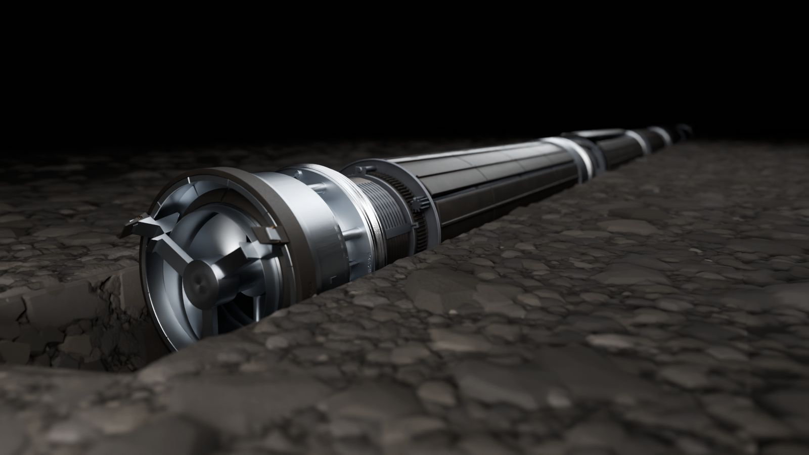
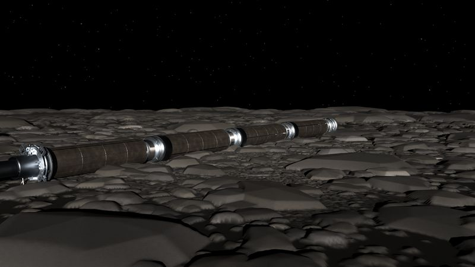
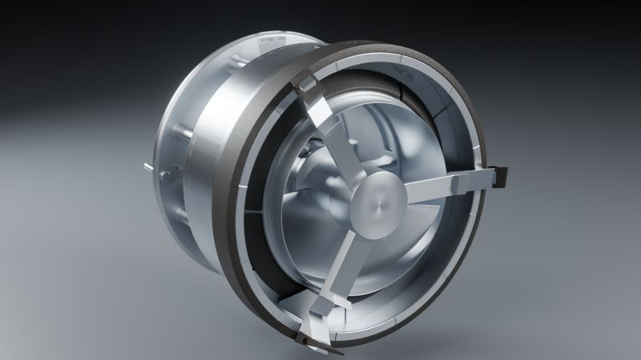

Find the people résumés miss.
Being built for firms that hire engineers and quantitative researchers, and for people who want their work found.
Research prototype · one founder · not incorporated · no clients yet
Method · numbers as of 17 Oct 2026
Two kinds of evidence, one report.
01
Reasoners
Contest and math records from Codeforces, AtCoder and Math Stack Exchange, standardized within each platform. Back-tested on Codeforces only.
Rating already finds strong players, and at the top of a list it is hard to beat. So the scout ranks by rating in 25-point bands and uses the score only to order players inside a band. On 2024–26 that ranking's top 50, 100 and 290 held 18, 40 and 92 future 2400s, against 21, 40 and 89 for rating alone. Part of the signal is who keeps competing.
Method and numbers
- Cohort. Every Codeforces player rated 1600–2300 on 16 Oct 2024, with at least 15 rated contests and 3 in the year before: 11,088 players. 290 (2.6%) reached 2400 in the two years after.
- Chosen on earlier data. Same rules on 16 Oct 2022: 9,305 players, 274 reached 2400 by Oct 2024, before the test period starts. Traits kept if their within-band AUC was above 0.55, reversed if below 0.45: 12-month rating gain, how few contests it took to reach 2000 (0 if never), months with a contest in the 12 months before their last one, distance below their own peak, minus calendar years with a rated contest.
- Ranking, also chosen on 2022–24. Candidates: rating alone; rating plus 0.05, 0.1 or 0.2 × score; rating bands of 10, 25, 50 or 100 points with the score ordering each band. 25-point bands found the most future 2400s in the top 50, 100 and 290.
- Test. Frozen and applied to the 2024 cohort: the score alone gets 0.647 within 100-point bands (rating: 0.599) and 0.632 within 10-point bands. The deployed ranking gets AUC 0.899 overall, against 0.896 for rating alone (95% CI 0.878–0.913). Rating + 0.2 × score had the highest AUC, 0.908 (paired-bootstrap gain over rating +0.005 to +0.019), but only 13, 28 and 81 future 2400s in its top 50, 100 and 290, so it isn't used.
- Who keeps competing. 37% of the 2024 cohort played no rated contest afterwards. Grouping players by contests played afterwards as well as by rating, the score's AUC falls to 0.613.
- Caveats. The 2024 cohort had been explored in-sample before this test (traits chosen and scored on the same players: 0.655; from a 2023 start, three-year window: 0.668), so it is not a fully clean holdout. The first formula (rating, plus 0.6 × 12-month gain, plus a bonus for passing the climb filter) scored 0.879 overall, below rating alone.
- Live list. Active players rated 2100 or more, with at most 60 followers, accounts under five years old and no olympiad-style or birth-year handles, drawn from the 1,200 highest by rating less a follower penalty. They must also pass filters the test didn't use, including 25 or more rated contests, a climb of 300 from their first 10 contests and a positive 12-month gain. The test covered ratings 1600–2300; 25 of the 64 now listed are above 2300. The AtCoder and Math Stack Exchange lists are not back-tested.
- AUC = the probability that a randomly chosen player who reached 2400 is ranked above one who did not. Within-band AUC is averaged across bands, weighted by the number who reached 2400; a band needs at least 3 who did and 3 who didn't.
02
Builders
People whose code maintainers merged into major open-source projects, but whom few people follow. Identified by that evidence, not predicted.
From LLVM (64), llama.cpp (36), CPython (19), Rust (10), SciPy (6), NumPy (5), tinygrad (5), Julia (4) and DuckDB (1). JAX and Lean's mathlib were searched too; mathlib's merges aren't visible this way.
Method and numbers
- Rules. 3 or more merged pull requests in the 12 months to 17 Oct 2026, no more than 40 per active month, and 150 GitHub followers or fewer. Removed: bots; anyone who has pressed merge in that project or another one searched; public members of major open-source organizations, including the project's own; people whose profile names a company or institution on a fixed list (large tech and chip companies, AI labs, trading firms, national labs, each project's sponsors, some universities); owners of a repository with 1,000 or more stars; and profiles that suggest a minor. Of 275 people examined, 125 were removed, each counted under the first matching reason: 59 for followers, 29 for organization membership, 35 for company or institution, 1 as a committer elsewhere, 1 as a possible minor. Half of the 150 have 12 or fewer followers.
- Merge rights. The 140 outside Rust have not pressed merge on any pull request in their project in the history fetched (since Oct 2023; tinygrad since Oct 2025), and none is a public member of the project's organization. A committer who pushes directly and keeps membership private would still slip through. Rust merges through a bot, so for its 10 only organization membership is checked.
- Why it isn't called prediction. In eight of the projects (not Rust or tinygrad), 2,653 people (2,721 person-project records) had merged pull requests between Oct 2023 and Oct 2024 and had not pressed merge or approved anyone else's. 156 pressed merge in the two years after, a sign they had been given write access; 135 of them in LLVM, so this is mostly an LLVM measurement. Merged-PR count ranks them with AUC 0.641, but that mostly separates one-time contributors from repeat ones: among records with 3 or more merged pull requests it is 0.556, and among those with 6 or more, like everyone on the list, 0.518 (33 of 159 pressed merge, 28 in LLVM), which is chance. Other traits looked informative in-sample within count bands; the one out-of-sample check possible, split by project, had only 3 positives and went the other way (0.394, against 0.717 for count alone). So the list's order carries little information. What it offers is evidence of accepted work, for a person to read.
03
Dossiers
For the first 30 on the list, code pulls facts from up to 15 of each person's merged pull requests, and an open-weight model running locally reads 12 of them and writes what the person works on. Each dossier links every pull request the model's write-up cites, so a recruiter can check each claim at the source.
Core-code share, measured by code, runs from 0.24 to 0.94 across the 30. It separates people; the model's own 1–5 difficulty ratings, all between 4 and 5, did not.
Method and numbers
- Facts by code. Files touched, size, number of reviews, approval words in reviews (including “thanks” and “LGTM”), and core-code share: the share of changed files outside tests, docs, CI and examples. Extracted from GitHub, not written by the model.
- Judgment by model. Specialty and summary come from Qwen3 8B running on a laptop. The dossier pipeline sends nothing about a candidate to an outside AI service.
- Check. Every pull-request number the model cites, with or without “#”, is compared with the person's fetched pull requests: none invented in 30 dossiers. It tests citations, not whether a summary is right, so a person reads the pull requests before anyone is contacted.
- Not used. The model's difficulty ratings, because they don't separate people.
Principles
Four rules.
- Public data only, from official APIs and public pages.
- Adults only. Only people who confirm they are 18 or older can opt in or be shown to a client; the lists are screened for minors by profile text and handles.
- Nobody's information goes to a client without their opt-in.
- No scraping of sites that forbid it: every page fetch checks robots.txt first.
Neuropian builders
Designed by Neuropian builders.
The astroworm is a burrowing anchor for asteroid mining; the Water Worm is its version for mine tailings ponds on Earth. Rendered from CAD. Neither has been built.





Roadmap
Next.
- In developmentLinking one person's accounts across platformsConfirmed only by links the person published. Weaker matches (same handle, name or photo) are scored, kept unconfirmed and never used to contact anyone.
- PlannedOpt-in profilesPeople see their own record and choose who else sees it.
- PlannedA pilot with one hiring firm20 opted-in candidates, measured against the firm's usual pipeline.
Contact